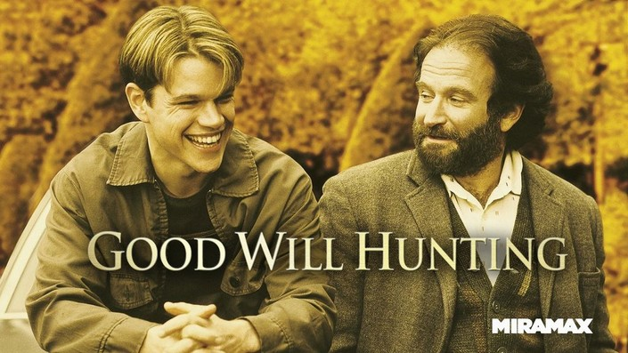

Jurassik Park
Plot: In Jurassic Park, scientists use genetic engineering to bring dinosaurs back to life, creating a theme park filled with living dinosaurs on a remote island. When the park's security fails, the dinosaurs escape, putting the visitors and staff in a desperate fight for survival against the prehistoric predators.
More informationPirates of the Caribbean
Plot: The Pirates of the Caribbean series follows the eccentric Captain Jack Sparrow teams up with unlikely allies to battle cursed pirates, mythical creatures, and rival forces while seeking legendary treasures. Their adventures are filled with supernatural threats, intense sword fights, and high-seas escapades in a race for freedom, love, and power.
More informationDeadpool & Wolverine
Plot: Deadpool & Wolverine typically centers on the unlikely, often chaotic alliance between the wisecracking mercenary Deadpool and the gruff, battle-hardened mutant Wolverine. The long-awaited collaboration between Deadpool and Wolverine brings together two iconic antiheroes in a thrilling, action-packed adventure filled with razor-sharp humor and relentless combat.
More informationDeadpool & Wolverine
Plot: In Good Will Hunting, a brilliant but troubled young janitor at MIT, Will Hunting, is discovered for his exceptional mathematical talent but struggles with personal trauma and fear of vulnerability. With the help of a compassionate therapist, he embarks on a journey of self-discovery, confronting his past and learning to embrace his potential.
More information